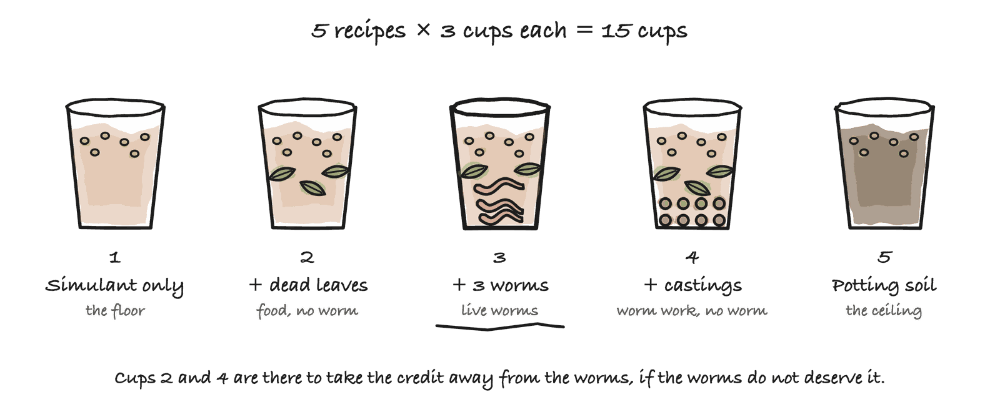

Stage 3: Testing Biology Enriches Dirt
Can earthworms turn Mars dirt into something a seedling will grow in?
The whole project rests on one assumption: put life into Martian dirt and you get soil. Nobody has checked it.
That is what this stage is for. Live earthworms, real Mars regolith simulant, fifteen cups on a shelf, seven weeks. The protocol is written and the analysis is built and tested. The experiment has not been run yet.
Where this sits in the project
| Stage | What it answers | |
|---|---|---|
| Stage 1 | Searching Earth for MarsWorm | Is there already an organism that can do this? |
| Stage 2 | Designing MarsWorm | Nothing can, so borrow 37 real genes and design one |
| Stage 3 | Testing Biology Enriches Dirt | Can life from Earth turn Martian dirt into soil at all? |
| Stage 4 | Testing Genes Enable Survival | Does a gene really bring its ability with it? |
| Stage 5 | Building MarsWorm | 24 genes into one host, in six tested rounds |
| Stage 6 | Testing MarsWorm in Dirt | Put it in Martian dirt and find out whether anything grows |
Stages 1 and 2 are a laptop and a database. This is where the project stops looking things up and starts getting its hands dirty. If it fails, the 37-gene order was aimed at the wrong target.
Fifteen cups
Five recipes, three cups each, so no single lucky cup can decide anything.

| Group | What is in the cup | Why it is here |
|---|---|---|
| 1 | Mars simulant only | the floor: what Mars gives you |
| 2 | Simulant + dead leaves | the food, with no worm |
| 3 | Simulant + dead leaves + 3 worms | the real thing |
| 4 | Simulant + dead leaves + worm castings | worm poop, with no worm |
| 5 | Ordinary potting soil | the ceiling: real soil, for scale |
Groups 2 and 4 are what make this an experiment instead of a demonstration.
Group 3 gets food and worms, so if it wins, you still do not know which one did it. Group 2 has the food alone. If Group 2 does just as well, the leaves did the work and the worms added nothing.
Group 4 asks the sharper question. Worm castings are worm poop, full of microbes, with no living worm in it. If Group 4 keeps up with Group 3, the worm’s body is not what matters. The microbes it leaves behind are, and the worm is only the delivery van. That is the one result that would change how the rest of the project thinks.
What gets written down
The cups sit side by side for four weeks: same room, same light, same water. Every week, five things are measured in every cup, and each one is a single reading you can take at a kitchen table.
| Measured | How | What it tells you |
|---|---|---|
| Crumbs | tip a dried scoop onto a sieve, weigh what stays on top | soil clumps, dust falls through |
| Water it holds | weigh a scoop dry, soak it, weigh it again | dirt drains, soil holds on |
| pH | a test strip in muddy water | whether a plant could stand it |
| Plant food | an aquarium nitrate strip | whether there is anything to eat |
| Buried cloth | bury a cotton square, dig it up, weigh what is left | the more that rotted, the more life is in there. Nothing rots in sterile dust |
Then the payoff. At week 4 every cup gets ten seeds of the same radish, from the same packet. Sprouts are counted and measured every few days. At day 21 the sprouts are cut, dried and weighed, and that weight is the answer: the one number that says whether this dirt grew anything.
The full protocol, materials and week-by-week steps
Materials
| What to get | How much | Notes |
|---|---|---|
| Eisenia fetida, red wiggler compost worms | about 20 | from a garden centre or a bait shop |
| MGS-1 Mars regolith simulant | order 4 kg | 3.1 kg is used across 12 of the 15 cups. It is the most expensive item here, and the spare kilogram means a dead batch of worms costs a rebuild, not a delivery wait |
| Shredded dead leaves, plus a little food scrap | a few handfuls | pre-composted for a week |
| Ordinary potting soil | enough for 3 cups | this is Group 5, the ceiling |
| Identical 8 oz cups with drainage holes | 15 | about 200 mL of medium each. Cup size is set by the worms, not the plants |
| Radish seeds and lettuce seeds | 1 packet each | both germinate fast and are well studied |
| 2 mm sieve | 1 | a kitchen sieve with roughly 2 mm holes is fine |
| pH strips, and nitrate aquarium strips | 1 pack each | |
| Squares of plain white cotton, cut from an old t-shirt | 15, all the same size | one buried in each cup |
| Kitchen scale | 1 | grams, 0.1 g resolution if possible |
| Grow light on a timer | 1 | the same 12 to 14 hours a day for every group |
| Spray bottle | 1 | so every cup is watered the same way |
Making the Group 4 castings
Run a small worm bin on ordinary soil and food scraps for about two weeks beforehand. Harvest only the dark crumbly castings, pick every worm back out, and mix those into plain simulant and organic matter.
Weeks 1 to 4: let it work
All 15 cups side by side, watered to the same dampness on the same
schedule, and the schedule gets logged. Take the five weekly
measurements and write each into its numbered column in
data/weekly_measurements.csv. Bury the cotton squares in
week 1 and dig one up in weeks 2, 3 and 4. Photograph every cup from
directly above, same distance, same lighting, which a Pi camera can
automate. Tip every scoop back into its own cup
afterwards, because the cups are small and four weeks of
sampling would empty them.
Weeks 4 to 7: plant it
Sow 10 seeds of the same species from the same packet in every cup. Water identically and log every watering. Every 2 to 3 days, count the sprouts that are up and measure their height with a ruler. At day 21, cut the sprouts at soil level, dry them, and weigh them.
Rules that keep it fair
Each of these closes a way the experiment could fool us.
| The rule | What goes wrong without it |
|---|---|
| Same seed packet for every group | seed batches germinate differently, so the seeds could win instead of the soil |
Cups laid out in the shuffled bench_position order from
data/containers.csv, never grouped by
treatment |
one group quietly gets the brightest, warmest end of the shelf |
| Every measurement taken the same day for all 15 cups | a cup measured three days later has had three more days to grow |
| Photos labelled with a number, not a treatment name, before the sprouts are counted | knowing which cup is which nudges the count |
| Three cups per group, and always report all three, never only the average | an average hides the one cup that disagrees |
Leave a cell blank if you did not measure it, and
never type 0 |
the analyser treats a zero as a real measurement of nothing |
Write down only what you can read off an instrument. A weight, a number on a strip, a count of sprouts. Every column is explained in the codebook.
How a verdict is decided
Seven weeks later, the worm cups look heavier. Did the worms win?
Two rules answer that, and both were written down before any numbers existed, so nobody could invent a rule that made the answer come out nicely.
| The rule | The question it asks |
|---|---|
| A clean win. The worst worm cup still beat the best no-worm cup | was it every cup, or one lucky one? |
| Big enough. The gain covers at least a tenth of the ruler from bare dust to real potting soil | was the difference big enough to matter? |
Say you are comparing the worm cups against the no-worm cups. If the worm cups pass both rules, they really did grow more. If they miss the first rule, the two groups are tangled together and one lucky cup might be doing all the work. If they miss the second rule, they really did grow more, but by so little that nobody would ever notice. Miss either rule and the answer is no.
When the two groups overlap badly enough that neither wins, the report says “we could not tell these apart with only three cups each”, which is an honest answer as well.
Why “big enough” is a separate bar
The two bars ask different things, was it reliable? and was it big?, and they can disagree. One of the practice runs is exactly that case.
| The three cups | Average | |
|---|---|---|
| Bare regolith | 0.041, 0.041, 0.042 g | 0.041 g |
| With worms | 0.087, 0.091, 0.094 g | 0.091 g |
| Potting soil, for scale | 0.676 g |
Every worm cup beat every regolith cup, and twice as heavy. By the first bar alone, a triumph.
But the whole scale is 0.676 − 0.041 = 0.635 g, and the worms gained 0.049 g. That is 8% of the way to real soil, and those plants sprouted and died. The bar is 10%, so the honest answer is no, and that is what the report says.
Practice runs on made-up data
Seven weeks is a long time to find out your code is broken. So invented numbers are written into the same sheets a person would fill in by hand, including runs where the experiment fails, and the report is run against each one to see whether it says something true.
| Practice run | What it pretends happened | Did the dirt improve? | Did the worms add anything? | Were the castings enough? |
|---|---|---|---|---|
worms-work |
the result we hope for | ✅ yes | ✅ yes | ❌ no, the live worm mattered |
castings-only |
the castings did it, not the worm | ✅ yes | ✅ yes | ✅ yes |
food-not-worms |
dead leaves did it, worms added nothing | ✅ yes | ❌ no | n/a |
nothing-grew |
a tiny gain that means nothing | ❌ no | n/a | n/a |
Every one of these reports is titled Dry run, so nobody can mistake one for a finding. They are not evidence of anything. They are proof that the report tells the truth before there is any truth to tell.
Two of them matter most. castings-only
is the world where microbes do the work and the worm is only the van,
which would redirect the whole project.
nothing-grew checks that the report says
no without softening it, and that it knows when a
question has stopped making sense. Once nothing has grown, “was it
the worms or the food?” has no answer, so the report prints
“nothing to compare” rather than inventing one. Those
are the n/a cells, and they are a feature.
Made-up data is also the only way to catch a broken rule.
With the clean-win rule alone, nothing-grew reads as a
triumph. The mistake is in the rules, not the numbers, so no amount of
staring at real data would find it. Only a case where the right answer
is already known can.
What counts as success
Success is Group 3, the worm cups, growing heavier seedlings than Group 1, the bare Mars dust, by a gap that clears both rules, and holding more water and more crumbs along the way. Or Group 4, the castings with no worm in them, doing it instead. Group 5 is ordinary potting soil, and it is the ceiling. The worm cups do not have to beat it, only close a real share of the distance to it.
A failure is still a result. If Group 2, the dead leaves with no worm, does just as well as Group 3, then the leaves did the work and the worms added nothing. That is worth knowing, and the report will print it without being asked twice.